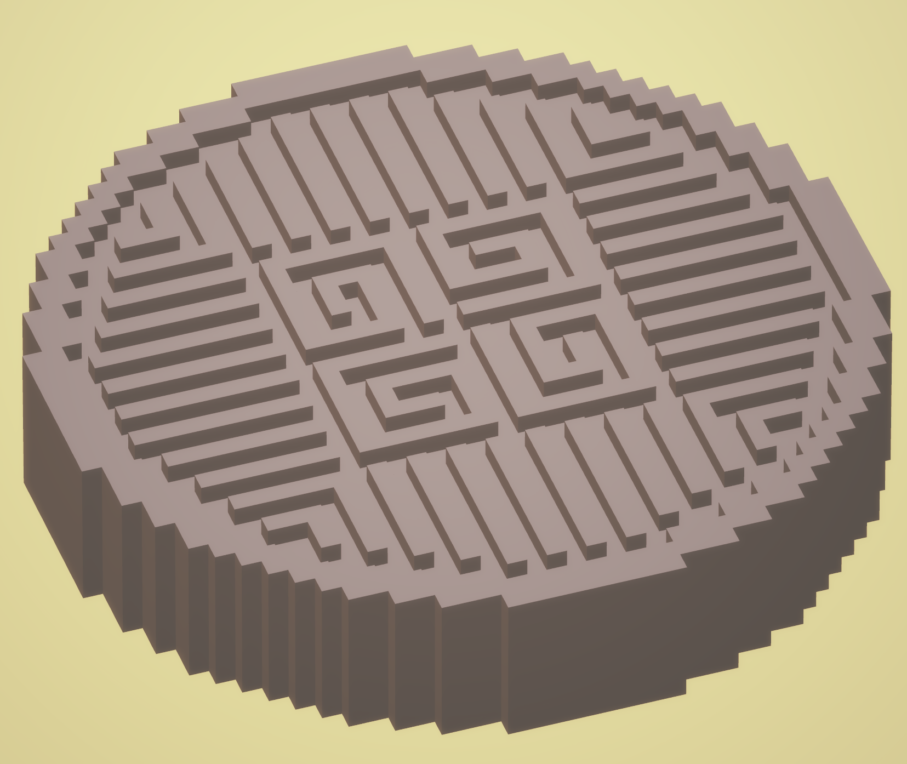
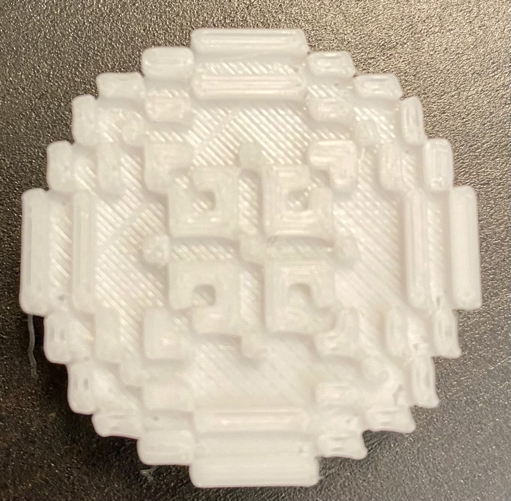
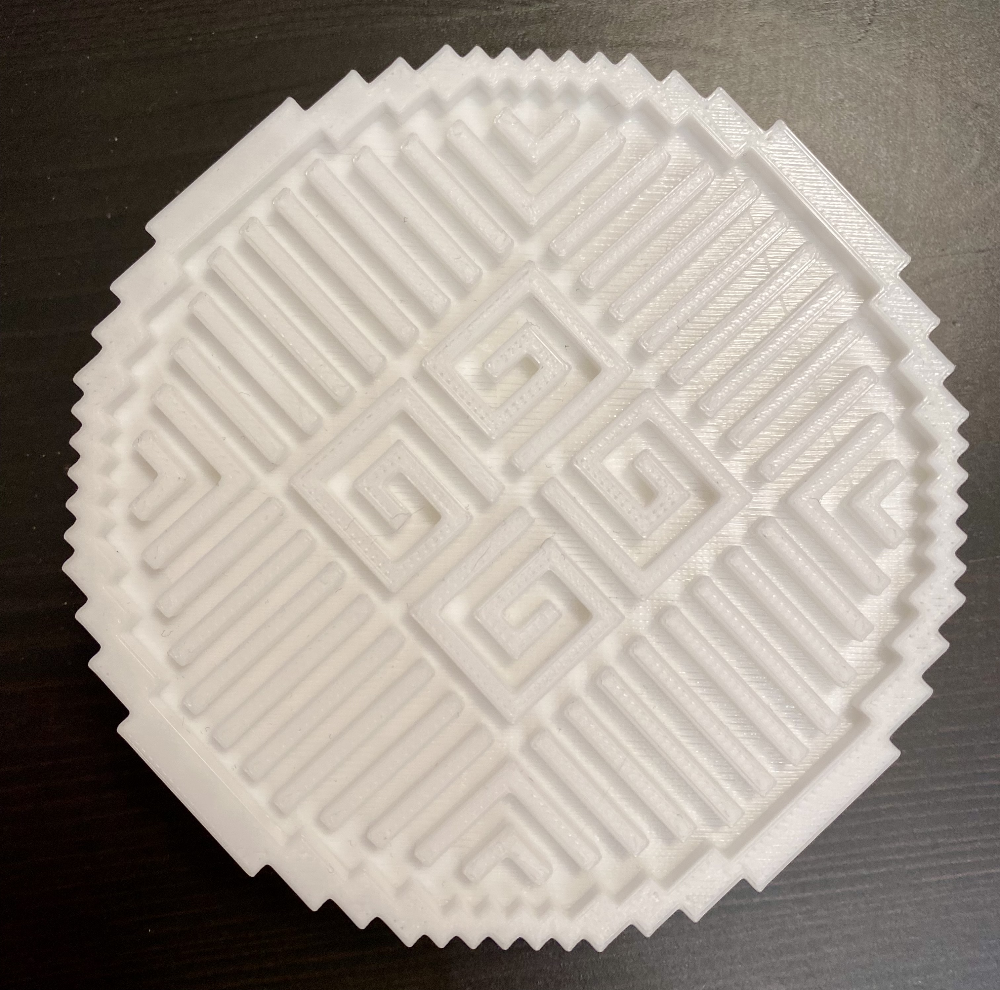

This project builds on the previous Minecraft project. We used Region, Mineways, and FlashPrint to extract our Minecraft builds. Using FlashPrint, we scaled our models accordingly and used the 3D printer to create models. My first draft was really small so I created a more detailed mooncake design to print as a larger model.